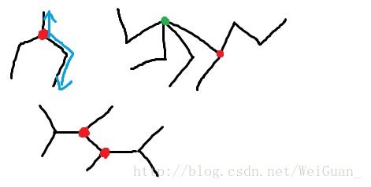

Codeforces，每周举办高质量的算法比赛，同时承办许多国外知名企业举办的算法竞赛，算法爱好者的交流学习基地。
题意：每次从一棵树中找两根长度相同、起点相同的直链并删去其中一根。重复这个操作，求可以得到的最短直链的长度。如果无法得到直链，输出-1。
需要注意的是树即使已经被删成直链了，如果长度是偶数还可以继续删的。
问题的关键是找到树中的“特殊点”，也就是我上面的图中的所有红点。“特殊点”的特点是它的度>2，且与它相连的直链长度不全相等，即以它为起点，不经过其他度>2的点，到达叶子节点的路径有至少两条，且长度不全相等。
容易看出：若特殊点超过1个，结果必是-1；如果上述路径有三种及以上的长度，结果也是-1。不然，结果就是这两种长度之和，然后再除2直到不为偶数。
看出这个结论后就非常简单了：先对任一点建dfs树，用set存起每个点的节点的返回值，如果set.size>=3直接-1，如果==2就说明这个点是特殊点，再以这个点为起点建树做一遍。如果==1说明是普通点，直接+1返回上一层。
此外还需判断没有特殊点的情况。答案不一定直接就是cut(N-1)，比如
4 4 1 4 2 4 3这种数据，还得瞎搞一下，不再赘述。 
Codeforces，每周举办高质量的算法比赛，同时承办许多国外知名企业举办的算法竞赛，算法爱好者的交流学习基地。

Github，一个面向开源及私有软件项目的托管平台，在此可以十分轻易地找到海量的开源代码，并与全球程序员合作开发。

虚位以待。
如果你有什么问题、意见或者建议，随时欢迎和我发邮件联系！如果对我在博客中提到的项目源码感兴趣，可以去我的github主页看看。